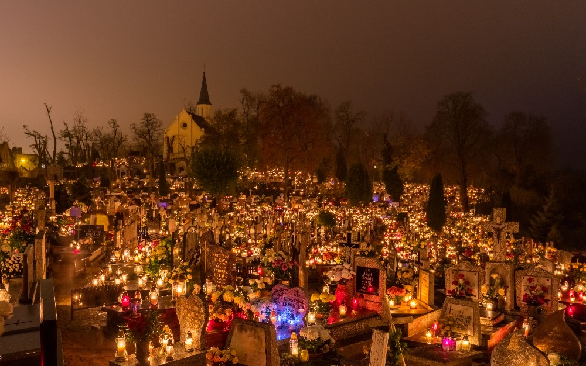
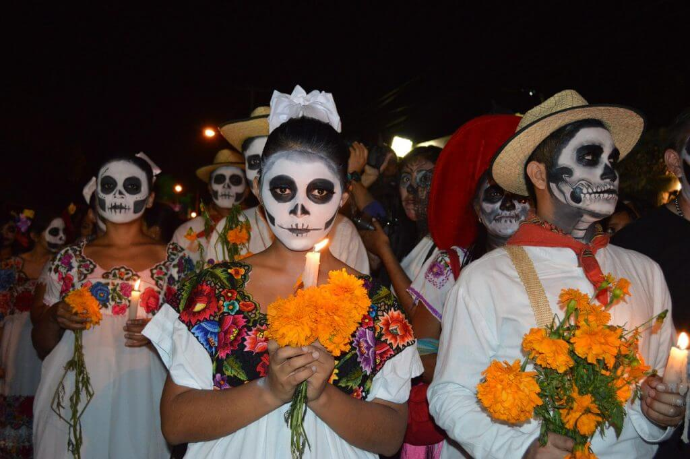

Orígenes del Día de Muertos
El Día de Muertos es una tradición mexicana que honra a los seres queridos que han fallecido. Esta festividad tiene raíces prehispánicas y mezcla elementos indígenas y cristianos, celebrándose el 1 y 2 de noviembre.
Tradiciones y Elementos del Día de Muertos
- Altares: Son creados para honrar a los fallecidos, decorados con fotos, velas, y comida favorita del difunto.
- Calaveras: Se usan calaveras de azúcar como símbolos de muerte y renacimiento.
- Flores de Cempasúchil: Estas flores guían a las almas al mundo de los vivos.
- Pan de Muerto: Un pan dulce tradicional que simboliza el ciclo de la vida y la muerte.
Importancia Cultural
El Día de Muertos es una fecha para recordar, celebrar y conectarse con los seres queridos fallecidos. Reconocido como Patrimonio Cultural Inmaterial por la UNESCO, simboliza el amor eterno y la memoria hacia quienes ya no están con nosotros.
